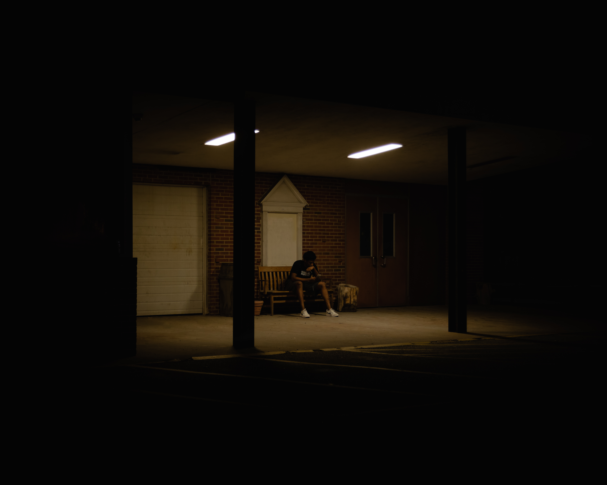
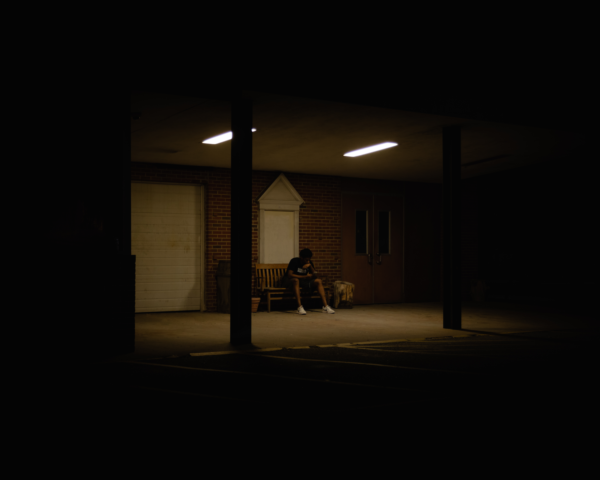

I am a photographer and videographer from Fairfax, Virginia. I started taking pictures and making videos when I was 7/8 Years old. From there I always had a passion for creating through the lens of the a camera. I went on to create basketball highlight videos using cheap Walmart cameras and old cameras that people did not want anymore. Then, I progressed to an iPod then iPhone which I used to start a Youtube channel. Now I work using a Canon Rebel T6i and work with small local business and organizations. The goal of NR Productions to provide maximum quality, storytelling, and affordable content to anyone looking to boost their presence in today's digital market. But my personal goal is to continue to learn and develop my skills to further my passion. I appreciate you visiting the site and hope that you enjoy what you see!